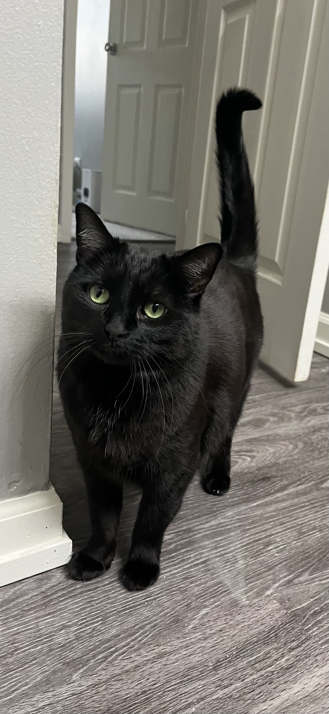

Me
Midi the kitty
About Me
Hello! My Name is Tom Garrett, I also go by Tommy but I don't have any preference. I am orignally from the Upper Pennisula of Michigan (the other half of Michigan that resides north of Wisconsin.) There I come from the small industrial town of Iron Mountain. There were too few opportunities for me up there, so decided to I move down to Chicagoland about 7 years ago now.
Music
For the longest time I had a passion for music! When I started to learn how to play piano and guitar, I was instantly hooked! Later on while I was being a college student I started looking into other areas, and that's where I discovered my joy for electronic music. Before I knew it I was learning how to DJ and preforming in nightclubs. Because of my musical background, it was only natural for me to dig deeper and learn how to produce my own music to perform live. For the past 5 years I have been involved in the Chiocago House/Techno subculture, it's been alot of but now it's time for me to seriously pick a career to run with, and that's when I landed on coding.
Coding
I am very excited to learn how to code as I have always had in interest in technology. I do get bored easily with things being the same each day and desired a new life challenge. I also just simply enjoy the process of learning, so I figured this is the direction I wanted to steer in. I attempted to teach myself, but that was a real struggle and soon realized.. I'm going to need some proper instruction. I knew I don't want to go back to school, so I did some looking around and eventually decided to enroll in a coding bootcamp, specifically "Coding Temple"! I haven't been this excited about something in years, and I am excited for what the future has to offer. I know this journey is going to be the most difficult thing I've probably ever done, however for the good things in life, you have to put in the work!